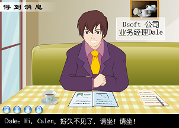

基于虚拟场景的微软实训课程
虚拟实训平台是突破企业实训的有效途径。对于软件学院的学生，每年都有部分到企业进行实习，但是企业接受学生容量有限，并且实习企业优劣不一，工作任务和环境各不相同，建立虚拟实训平台，可以实现统一标准、高水平、多种组织类型、多种应用场景的实训环境，从而突破现实的限制。本实训课程的目标是在校内的仿真企业中，基于虚拟场景，培养素质全面、掌握企业软件项目开发方法及具有企业软件项目开发综合实践能力，提高软件产业整体竞争力的合格人才。
通过理论与实际的结合，完整的阐述了基于微软VSTS环境下，结合软件项目管理理论及CMMI的标准过程体系，完成一个软件项目的全过程。并辅以一个贯穿全过程的案例。课程除了向讲述所涉及的项目管理的理论、方法及技巧外，更结合实际案例讲授软件项目中各角色的主要工作、职责和权利；并综合CMMI模型，讲授了项目计划、质量计划、变更计划、风险计划、度量计划等文档的制定，以及项目实施过程中如何对项目进行跟踪控制。
虚拟案例主要是围绕一家软件开发公司(以下称为Dsoft公司，也称乙方)为另一家贸易公司(以下称为Comm公司，也称甲方)开发一套人力资源管理系统（以下简称HRM系统）来讲述的。重点我们是放在Dsoft公司如何结合方法学和工具完成HRM项目的整个过程。有助于学生了解具体企业中项目开发、管理的实际流程。
图44和45是模拟场景的部分实例。

图 44:项目启动阶段模拟场景 图 45:项目立项阶段讨论会模拟场景
(1)项目阶段及过程。
HRM系统的项目管理过程严格遵循了项目管理知识体系（PMBOK）的标准化过程，分为5个阶段:启动、计划、执行、控制、结束。它们的关系主要是:
启动阶段－－确定HRM项目的开始，并着手实行。
计划阶段－－进行HRM项目的计划，并且保持一个可操作的进度安排，确保实现Dsoft公司制定的商业目标。
执行阶段――协调公司人力和其它相关资源，依计划执行。
控制阶段――通过监督和检测过程，确保项目达到目标，必要时采取相应修正措施。
结束阶段――HRM项目得到Comm公司正式认可并且有序地结束该项目。
在项目流程的不同阶段所需完成的主要工作任务如表11所示:
表11:项目阶段及过程
|
启动阶段 |
计划阶段 |
执行阶段 |
结束阶段 |
|
控制阶段 |
|||
|
1.确定战略远景 2.确定具体目标 3.确定需要完成的任务 4.确定要做的工作 5.确定要解决的问题 |
6.制定项目任务重要性同优先级 7.制定项目工作任务单元 8.分配项目资源 9.估算工作单元时间 10.制定项目时间表 11.计算项目费用 |
12.对项目进展成果进行衡量 13.对项目的进展进度进行追踪以及做必要的调整 14.对项目的进展进行状态通报 15.对工作任务完成的成果进行质量管理 16.对需求变化进行变更控制管理 17.对项目的进展进行风险管理 |
18.结果的提交 19.项目的总结 20.信息的储存 > |
(2)项目阶段文档
每个过程和阶段都会产生具体的交付物（也称工作产品），交付物是过程和阶段的具体工作成果或结论，代表着该过程阶段任务的完成。根据HRM项目具体执行的活动和过程，每个阶段的交付物汇总如表12所示。
表12:项目阶段文档列表
|
启动阶段 |
计划阶段 |
执行阶段 |
控制阶段 |
结束阶段 |
|
《立项申请书》 《可行性分析报告》 《项目合同》 《工作任务陈述(SOW)》 《用户需求说明书》 |
《项目计划》 《项目进度表》 《质量管理计划》 《配置管理计划》 《测试计划》 《测试进度表》 《系统需求说明书》 《数据库设计说明书》 《概要设计说明书》 《详细设计说明书》 |
程序源码 编译后的程序 《测试方案》 《单元测试记录》 《测试记录表》 |
《变更申请表》 《项目管理工作表》 《质量管理工作表》 《配置管理工作表》 《测试管理工作表》 《QA评审/审核报告》 《项目状态周报》 《项目状态月报》 《里程碑报告》 |
《用户操作手册》 《产品发行记录》 《客户确认函》 《测试总结报告》 《项目总结报告》 最终交付产品包 |